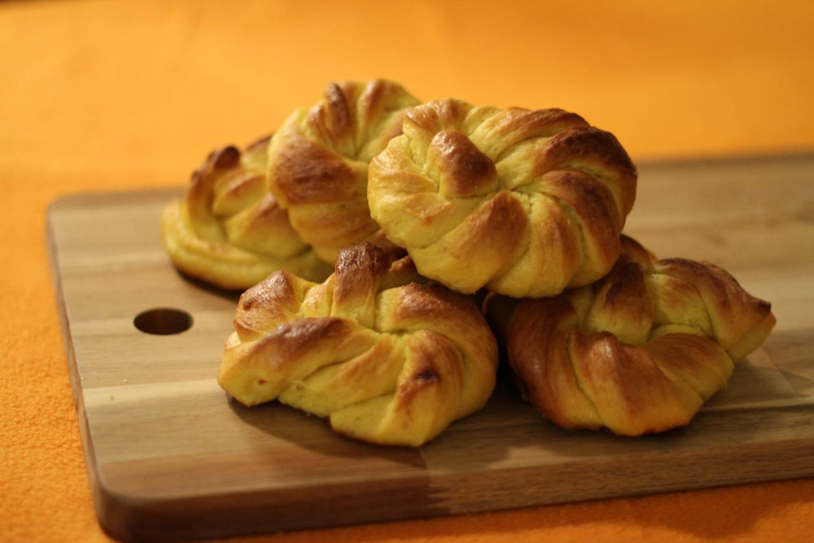

Saffron Knots
metadata
Created on 2018-12-17
Adapted from Safranknuter med smør og vaniljefyll by Kristine Ilstad @ Det søte liv (2018-12-18)
Recipe should yield this much: 15 knots.
Estimated time needed: At least 1 hours 58 minutes. At most 2 hours 2 minutes.
Ingredients
| 750 | g | all purpose flour | ||
| 270 | g | butter | ||
| 195 | g | sugar | ||
| 25 | g | fresh yeast | or half of sacket of dry yeast | |
| 5 | dl | milk | I used whole milk, but any milk should work. | |
| 1 | tbsp | milk | ||
| 2 | tbsp | vanilla extract | ||
| 1 | egg | |||
| 0.4 | g | saffron | There's no real taste replacement here. If you can't afford saffron, these knots will still taste good (but different) using cinnamon or some other spice. |
Scaling
Timeline
Directions
⌛ Active time 10 minutes | Passive time 30 minutes
- 5 dl milk | I used whole milk, but any milk should work.
- 150 g butter
- 120 g sugar
- 0.4 g saffron | There's no real taste replacement here. If you can't afford saffron, these knots will still taste good (but different) using cinnamon or some other spice.
heat:
Add milk, butter and sugar to a saucepan, and bring to a boil while stirring. When the sugar is dissolved, the butter melted and the milk boils, take the saucepan of the heat. Add the saffon, stir, and let the mixture cool.
⌛ Active time 5 minutes
- 25 g fresh yeast | or half of sacket of dry yeast
- 750 g all purpose flour
Mix:
When the milk mix has cooled down a bit, pour it into the kitchen machine bowl (or a large bowl). Add the yeast when the milk is around 37 degrees Celsius. Then add most of the flour, and mix with the dough hook (or your hands). The dough should not be sticky, so add more flour if needed. Continue kneading the dough for a few minutes when it's not sticky anymore. Then take the dough out of the kitchen machine bowl, and put it somewhere to rest.
⌛ Active time 1 minutes
- 120 g butter
Soften butter:
Use the microwave to soften the butter. Be careful not to melt it. About 10 seconds should be enough.
⌛ Active time 1 minutes | Passive time 1 minutes
- 75 g sugar
- 2 tbsp vanilla extract
Mix buttercream:
Meanwhile, create the filling with the kitchen machine. Whisk together the softened butter with sugar. Then mix in the vanilla extract.
⌛ Active time 3 minutes
Spread the filling:
Cut the dough into two pieces. Roll out half of it into a rectangle that is a little under half a centimeter thick. Use a spatula or spoon to spread half of the buttercream onto half of the rectangle, dividing along the longest side. Then fold the other half of the dough over the half with buttercream.
⌛ Active time 4 minutes
Shape into knots:
Cut the dough along its short side, into about 8 strips. Take one strip at a time, and twist it. Then make a knot of it. One way to make a knot is by creating a loop with the middle of the strip. Cross the ends of the strip and push them through the loop. Put the shaped knots onto sheets of baking paper to rest. Make sure to have some distance between the knots, as they will expand both while proofing and in the oven.
⌛ Active time 7 minutes | Passive time 45 minutes
Repeat and let proof:
Take the other half of your dough, and flatten, fill and shape it as you did with the first half. Then let the knots proof for about 45 minutes.
⌛ Active time 1 minutes
Preheat the oven:
220 ℃ (not using convection).
⌛ Active time 1 minutes
- 1 egg
- 1 tbsp milk
Brush on eggwash:
Mix together one egg with a splash of milk. Brush a thin layer onto the knots. You will probably have some eggwash left over.
⌛ Active time 1 minutes | Passive time 12 minutes
Bake:
Bake the knots in the center of the oven until they are golden with a bit brown on the top. This should take about 12 minutes.